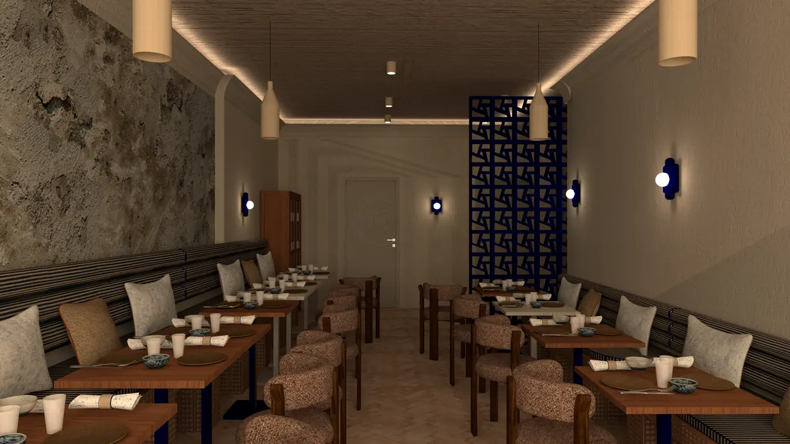

Maison Ilbarritz
La rénovation et l'extension d'une maison familiale face à l'océan, entre élégance basque et confort contemporain.
Entre océan et golf.
Une maison de la fin du XXe siècle, à deux pas de la plage d'Ilbarritz et du golf du même nom. Le projet rénove entièrement les 200 m² existants et ajoute une extension pour offrir plus d'espace de vie à une famille de quatre.

Façade : colombages verts et verrière de l’extension
Des volumes qui s'enchaînent.
L'aménagement optimise les volumes pour une circulation fluide. Chaque zone est clairement définie tout en gardant une continuité visuelle qui renforce l'ouverture. Le mobilier aux formes organiques, le bois et les éléments sculptés ajoutent une dimension artisanale.
La cuisine sur mesure adopte un plan linéaire avec modules coulissants, meubles hauts et électroménager intégré.


Une palette basque, intemporelle.
Les couleurs et matières de la région créent un intérieur authentique, élégant et intemporel.
- Vert & rouge basqueZelliges traditionnels
- Béton ciré & pierre blancheTouches brutes et minimalistes
- Bois sculpté & rotinChaleur artisanale
- Beige écru & blanc neigeDouceur et lumière
Palette


Projet suivant
Restaurant Molière
Restauration · Vieux-Port, Marseille